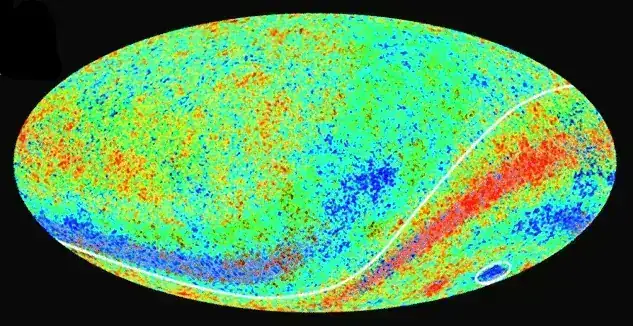
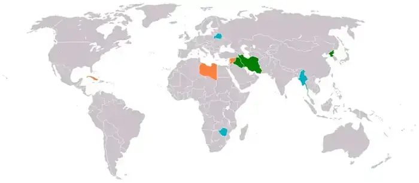
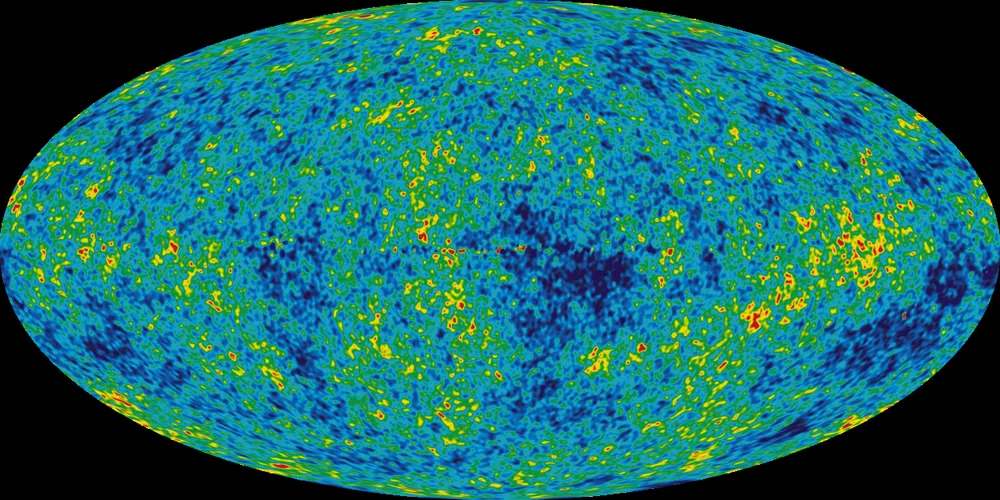

The observation
The cosmic microwave background shows temperature fluctuations at all scales. In 2005 an analysis reported that the largest-scale features align with the ecliptic and the equinoxes — an 'axis of evil' — which would be odd if the universe is isotropic.
Maps, diagrams and images






The interpretation
The effect is real in the data and is usually attributed to a combination of cosmic variance (there are few large-scale modes), foreground contamination and the analysis pipeline. It is not accepted as evidence of new physics, and it does not indicate that the solar system is special.
The archive files it as fringe because the pattern is documented and the strong interpretations are not.
Documented: the pattern in the data.
Plausible: cosmic variance and foregrounds.
Not accepted: as new physics.
Not evidence: of a special place.
The honest label: fringe.
Why it is in the archive
Because it is a real statistical oddity that is regularly presented as a crisis in cosmology.
Open resources on this topic
- BookThe axis of evil : Iran, Hizballah, and Palestinian terror — Shay, Shaul · 2005 (Internet Archive, free to read)
- BookCuisines of the axis of evil and other irritating states : a dinner party approach to international relations — Fair, C. Christine · 2008 (Internet Archive, free to read)
- BookThe axis of evil cookbook — Partington, Gill · 2007 (Internet Archive, free to read)
- PapersOpen-access articles: DOAJ · PubMed Central · Internet Archive Scholar
- BooksPublic-domain and borrowable copies: Open Library · Project Gutenberg · Google Books
Cite this page
Momin, S. (2026). The Axis of Evil. The Larger World Archive. https://drsamonline.github.io/LARGE_GLOBE/axis-of-evil.htmlMomin, Sohil. “The Axis of Evil.” The Larger World Archive, 2026, https://drsamonline.github.io/LARGE_GLOBE/axis-of-evil.html.Momin, Sohil. “The Axis of Evil.” The Larger World Archive, 2026. https://drsamonline.github.io/LARGE_GLOBE/axis-of-evil.html.@misc{the2026axis,
author = {Momin, Sohil},
title = {The Axis of Evil},
year = {2026},
howpublished = {The Larger World Archive},
url = {https://drsamonline.github.io/LARGE_GLOBE/axis-of-evil.html},
note = {Last reviewed 20 November 2026}
}Last reviewed 20 November 2026 · Corrections policy · this page is not peer reviewed
Sources for this page
- Wikipedia, “Cosmic microwave background” — the dataen.wikipedia.org
- Wikipedia, “Cosmic variance” — the statistical limiten.wikipedia.org
- Wikipedia, “WMAP” — the missionen.wikipedia.org
- Wikipedia, “Lambda-CDM model” — the frameworken.wikipedia.org